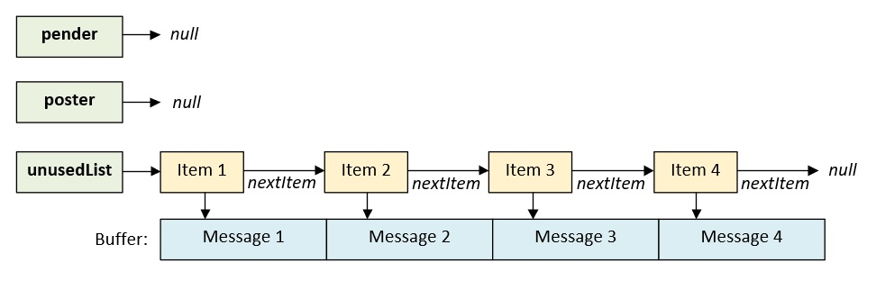
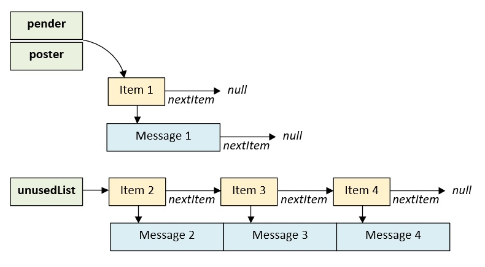
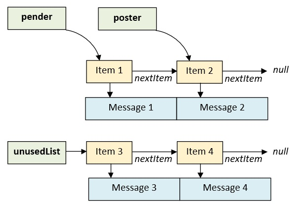
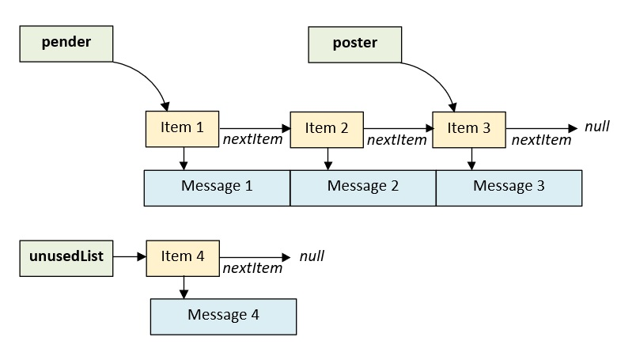
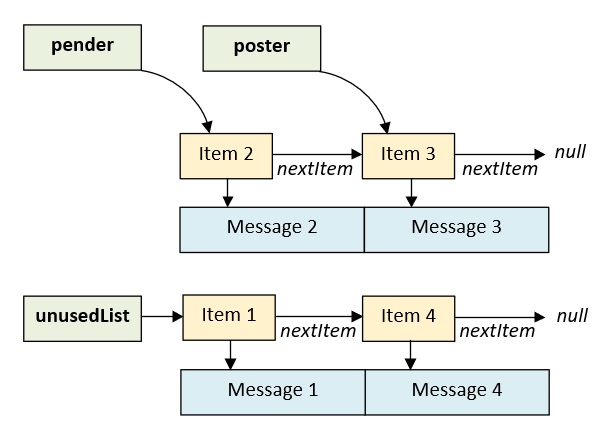
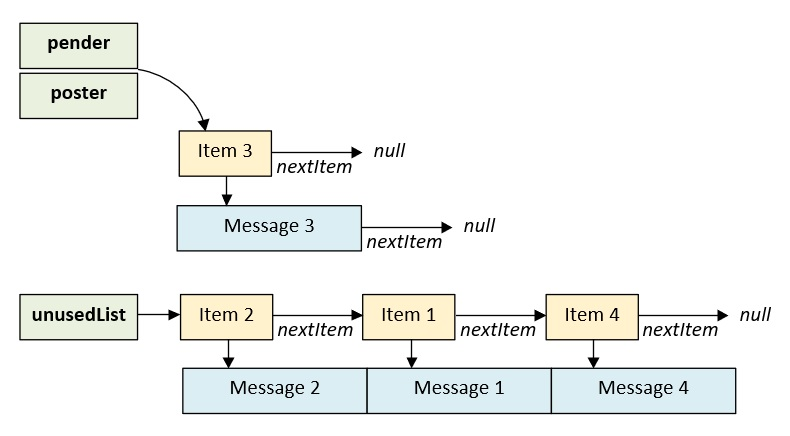
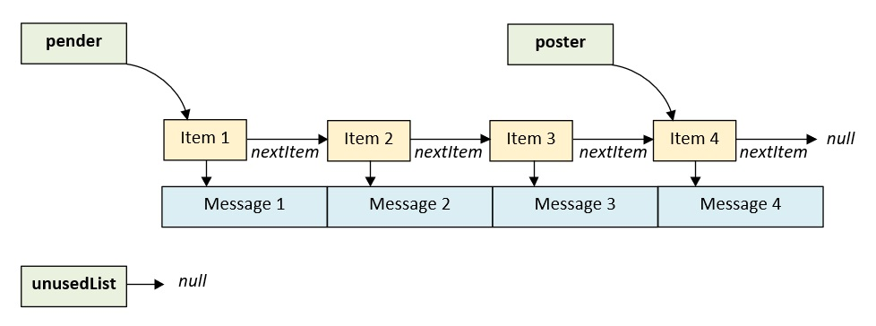
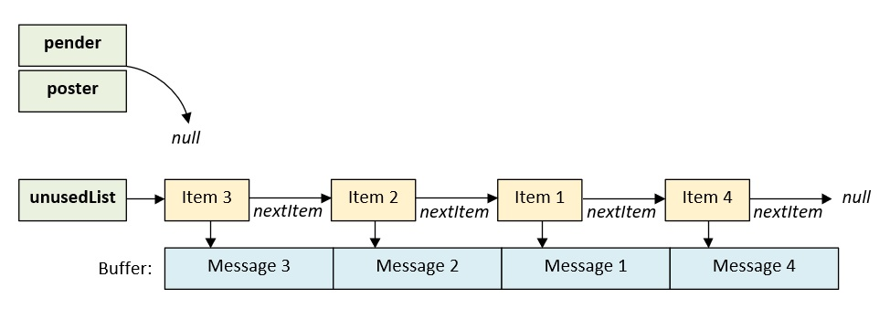

Communiquer avec les boîtes de messages
Le module mail permet d'échanger des données entre plusieurs tâches. Cette page détaille le fonctionnement et l'utilisation des fonctions de ce module.
1. Synthèse des fonctions
Les fonctions de ce module sont déclarées dans le fichier mk_mail.h :
| Fonction | Description |
|---|---|
| mk_ |
Crée une boîte de messages. |
| mk_ |
Poste un message dans une boîte. |
| mk_ |
Lit un message dans une boîte. |
| mk_ |
Supprime une boîte de messages. |
2. Fonctionnement
Une boîte de messages est construite à partir d'un buffer fourni par l'application. Ce buffer est découpé en plusieurs blocs de taille identique. Chaque bloc constitue un message. La figure ci-dessous montre l'état initial d'une boîte de messages constituée de 4 messages :

Pour chaque message de la boîte, le noyau alloue un petit espace mémoire supplémentaire (item) qui contient les métadonnées suivantes :
- ✔L'adresse du message dans le buffer.
- ✔L'adresse de la tâche qui a posté le message.
- ✔L'adresse du prochain item de la liste.
Lors de son initialisation, l'ensemble des items de la boîte est chaîné et positionné dans la liste des items non utilisés (unusedList). En plus de cette liste, chaque boîte possède deux pointeurs, le poster et le pender qui pointent respectivement sur le dernier message écrit dans la boîte et sur le premier message à lire dans celle-ci.
💬
Les tâches interagissent avec les boîtes de messages de 2 manières. Lors d'un post, la tâche productrice transmet un message au noyau qui le copie dans un emplacement libre de la boîte.
Lors d'un pend, la tâche consommatrice demande au noyau de copier un message de la boîte dans son buffer de destination.
Les figures ci-dessous montrent l'état d'une boîte de messages après trois posts successifs :



Le pender se situe toujours en tête de liste alors que le poster se situe toujours en queue de liste. Lors de chaque post, l'élément au début de unusedList est déplacé dans la liste des items utilisés. Si aucun emplacement n'est disponible dans la boîte, la tâche productrice peut décider de se bloquer en attendant qu'un emplacement se libère.
Les figures ci-dessous montrent l'évolution de la boîte de messages après plusieurs pends successifs.


Les messages sont lus dans l'ordre où ils sont postés (algorithme FIFO). Lors de chaque pend, le message à lire est retiré de la liste des items utilisés pour être déplacé en tête de unusedList. Dans la situation où plus aucun message n'est disponible dans la boîte, la tâche consommatrice peut se bloquer en attendant qu'un message soit posté.
Les figures ci-dessous montrent l'état d'une boîte de messages dans le cas particulier où elle est pleine ou vide :


💬
Lors de chaque post, le noyau copie le contenu du message dans la boîte. Un message peut néanmoins être transmis par référence en postant son adresse plutôt que sa valeur.
💬
Les tâches bloquées en attente d'un emplacement ou d'un message sont triées par ordre de priorité. Si plusieurs tâches attendent qu'un emplacement se libère ou qu'un message soit posté alors la tâche la plus prioritaire sera réveillée en premier.
3. Utilisation
La création d'une boîte s'effectue à partir des fonctions mk_pool_initArea et mk_mail_create. L'exemple ci-dessous crée une boîte de 4 messages :
/* On définit une structure pour l'exemple */ /* Sa taille est de 2 mots */ typedef struct T_message T_message; struct T_message { uint32_t id; uint32_t value; }; /* On définit la taille du buffer de la boîte */ /* On souhaite pouvoir allouer 4 structures T_message */ #define K_BUF_SIZE ( 4 * ( sizeof ( T_message ) >> 2 ) ) /* Déclaration du buffer de la boîte */ /* Il peut contenir 4 messages de type T_message */ K_MK_PRIVILEGED_BSS_MEMORY uint32_t g_mailBuf [ K_BUF_SIZE ]; /* Pointeur de la boîte */ K_MK_PRIVILEGED_BSS_MEMORY T_mkMail* g_mail; /* Une tâche privilégiée */ void mk_task_privileged ( T_mkAddr p_param ) { /* Déclaration de la variable de retour */ T_mkCode l_result = K_MK_OK; /* Déclaration d'une structure contenant les caractéristiques du buffer */ T_mkPoolArea l_area = { }; /* Initialisation du buffer de la boîte */ /* La taille est exprimée en mots 32 bits */ l_result = mk_pool_initArea ( &l_area, g_mailBuf, K_BUF_SIZE ); /* Création de la boîte */ /* Celle-ci est protégée et ne peut pas être manipulée */ /* par tâches non privilégiées */ l_result |= mk_mail_create ( &g_mail, K_MK_AREA_PROTECTED, &l_area, sizeof ( T_message ) >> 2, /* Taille des messages */ 4 ); /* Nombre de messages */ /* ... */ for ( ;; ) ; }
Après sa création, un message est posté avec mk_mail_post et lu avec mk_mail_pend. Le paramètre p_mkTick définit le comportement de la tâche lorsque l'opération ne peut pas aboutir immédiatement :
/* Tâche productrice */ void mk_producer ( T_mkAddr p_param ) { T_mkCode l_result; T_message l_message = { 1, 100 }; while ( 1 ) { /* La tâche attend au maximum 10 ticks un emplacement libre */ /* Elle reste dans l'état READY suite à l'envoi du message */ l_result = mk_mail_post ( g_mail, &l_message, K_MK_STATE_READY, 10 ); if ( l_result == K_MK_OK ) { /* Le message a été posté */ } else if ( l_result == K_MK_ERROR_TIMEOUT ) { /* Le message n'a pas été posté */ /* Boîte pleine pendant 10 ticks */ } else { /* Gestion des erreurs ... */ /* K_MK_ERROR_PARAM, K_MK_ERROR_ISR, K_MK_ERROR_RIGHT */ } } } /* Tâche consommatrice */ void mk_consumer ( T_mkAddr p_param ) { T_mkCode l_result; T_message l_message; T_mkTask* l_sender = K_MK_NULL; while ( 1 ) { /* Attente infinie d'un message */ /* l_sender reçoit l'adresse de la tâche qui a posté (optionnel) */ l_result = mk_mail_pend ( &l_sender, g_mail, &l_message, K_MK_TASK_WAIT_FOREVER ); /* Si la fonction retourne K_MK_OK, un message a été récupéré */ if ( l_result == K_MK_OK ) { /* Traitement du message ... */ } else { /* Gestion des erreurs ... */ /* K_MK_ERROR_PARAM, K_MK_ERROR_ISR, K_MK_ERROR_RIGHT */ } } }
Le paramètre p_mkState de mk_mail_post indique l'état que doit prendre la tâche appelante une fois le message posté. La constante K_MK_STATE_READY maintient la tâche dans l'état prêt alors que la constante K_MK_STATE_SUSPENDED suspend la tâche après l'écriture du message. La tâche devra alors être redémarrée explicitement par une autre tâche avec la fonction mk_task_resume.
/* Tâche productrice */ void mk_producer ( T_mkAddr p_param ) { /* ... */ /* La tâche transfère son message puis se suspend */ l_result = mk_mail_post ( g_mail, &l_message, K_MK_STATE_SUSPENDED, K_MK_TASK_WAIT_FOREVER ); /* ... */ } /* Tâche consommatrice */ void mk_consumer ( T_mkAddr p_param ) { /* ... */ /* On récupère le message et l'adresse de la tâche qui l'a posté */ l_result = mk_mail_pend ( &l_sender, g_mail, &l_message, K_MK_TASK_WAIT_FOREVER ); /* ... */ /* Si le message n'a pas été envoyé depuis un vecteur d'interruption */ if ( l_sender != K_MK_NULL ) { /* Le traitement est terminé, on réveille le producteur */ l_result |= mk_task_resume ( l_sender ); } /* ... */ }
💬
Ce mécanisme simplifie la synchronisation des tâches et notamment l'implémentation de modèles de type "sendAndReply".
La copie d'un message dans la boîte peut être coûteuse en termes de mémoire et de rapidité. Dans cette situation, il est préférable de poster une référence plutôt que la donnée elle-même. L'exemple ci-dessous montre un transfert par référence en utilisant une pool mémoire :
/* On définit la taille du buffer de la pool */ /* On souhaite pouvoir allouer 4 structures T_message */ #define K_POOL_SIZE ( 4 * ( sizeof ( T_message ) >> 2 ) ) /* Déclaration du buffer de la pool */ K_MK_PRIVILEGED_BSS_MEMORY uint32_t g_poolBuf [ K_POOL_SIZE ]; /* Déclaration d'un pointeur de pool */ K_MK_PRIVILEGED_BSS_MEMORY T_mkPool* g_pool; /* Tâche productrice */ void mk_producer ( T_mkAddr p_param ) { T_mkCode l_result = K_MK_OK; T_message* l_block = K_MK_NULL; T_mkPoolArea l_mailArea, l_poolArea; uint32_t l_counter = 0; /* Initialisation du buffer de la boîte */ l_result = mk_pool_initArea ( &l_mailArea, g_mailBuf, 4 ); /* Initialisation du buffer de la pool */ l_result |= mk_pool_initArea ( &l_poolArea, g_poolBuf, K_POOL_SIZE ); /* Création de la boîte (4 messages de 1 mot) */ /* La taille de la boîte doit faire la taille d'un pointeur */ l_result |= mk_mail_create ( &g_mail, K_MK_AREA_PROTECTED, &l_mailArea, 1, 4 ); /* Création de la pool (4 structures T_message) */ l_result |= mk_pool_create ( &l_poolArea, &g_pool, K_MK_AREA_PROTECTED, sizeof ( T_message ) >> 2, 4 ); /* Boucle pour toujours */ while ( 1 ) { /* Allocation d'une structure T_message */ l_result = mk_pool_allocSafe ( g_pool, ( T_mkAddr* ) &l_block, K_MK_POOL_CLEAR, K_MK_TASK_WAIT_FOREVER ); /* Si l'allocation a réussi */ if ( l_result == K_MK_OK ) { /* Écriture du message à envoyer */ l_block->id = 1; l_block->value = l_counter++; /* Réinitialisation du compteur */ if ( l_counter == 4 ) l_counter = 0; /* Transfert de l'adresse de l_block */ l_result = mk_mail_post ( g_mail, &l_block, K_MK_STATE_READY, K_MK_TASK_WAIT_FOREVER ); /* Si une erreur s'est produite */ if ( l_result != K_MK_OK ) { /* Libération du bloc */ l_result = mk_pool_freeSafe ( g_pool, l_block ); } } } } /* Tâche consommatrice */ void mk_consumer ( T_mkAddr p_param ) { /* Dans cet exemple, le producteur est plus prioritaire */ /* que le consommateur. */ /* La boîte est donc déjà initialisée quand le consommateur démarre. */ T_mkCode l_result = K_MK_OK; T_message* l_received = K_MK_NULL; /* Boucle pour toujours */ while ( 1 ) { /* Récupération du message */ l_result = mk_mail_pend ( K_MK_NULL, g_mail, &l_received, K_MK_TASK_WAIT_FOREVER ); /* Si aucune erreur ne s'est produite */ if ( l_result == K_MK_OK ) { /* Utilisation de la donnée pointée ... */ /* Libération du bloc */ l_result = mk_pool_freeSafe ( g_pool, l_received ); } } }
⚠️
Le noyau ne contrôle pas la validité et le contenu du pointeur transmis. La donnée pointée
doit donc
rester valide jusqu'à ce que la tâche consommatrice ait fini de
l'utiliser. Elle peut être localisée dans la pile de la tâche productrice sous réserve qu'elle ne
soit pas
détruite ou écrasée avant sa lecture. La constante K_
⚠️
Pour un transfert entre une tâche privilégiée et une tâche non privilégiée, la donnée pointée doit être accessible à la tâche consommatrice. Une tâche privilégiée qui reçoit un pointeur d'une tâche non privilégiée doit le traiter comme étant non fiable et vérifier qu'il désigne bien une zone non privilégiée avant de le déréférencer.
La fonction mk_mail_post peut être appelée depuis un vecteur d'interruption pour transférer des données à une tâche :
void IRQHandler ( void ) { /* Le message est copié dans la boîte avant le retour de mk_mail_post */ /* Une variable locale peut donc être utilisée */ T_message l_message = { 2, 0 }; T_mkCode l_result; /* Timeout nul, l'état READY est obligatoire dans une ISR */ l_result = mk_mail_post ( g_mail, &l_message, K_MK_STATE_READY, 0 ); /* Si K_MK_ERROR_TIMEOUT, la boîte est pleine et le message est perdu */ /* On ne peut pas attendre qu'un emplacement se libère dans une ISR */ ( void ) l_result; }
⚠️
À noter que l'interruption doit être moins prioritaire que le
vecteur SVC pour pouvoir utiliser les appels système
(priorité numérique supérieure ou égale à K_
⚠️
Dans un vecteur d'interruption, mk_mail_post impose un
timeout
nul et l'état K_
Étant donné que le message est copié dans la boîte avant que la fonction mk_mail_post se termine, celui-ci n'a pas besoin d'être dans un contexte persistant. Il peut directement être stocké dans une variable locale.
La dernière fonction de l'API est la fonction mk_mail_delete. Elle permet de détruire la boîte de messages en demandant au noyau de la désallouer :
/* Suppression de la boîte de messages */ T_mkCode l_result = mk_mail_delete ( g_mail ); /* Si une erreur s'est produite */ if ( l_result != K_MK_OK ) { /* Gestion des erreurs ... */ /* K_MK_ERROR_PARAM, K_MK_ERROR_ISR, K_MK_ERROR_RIGHT */ }
4. Protéger ses boîtes de messages
Les boîtes de messages peuvent être créées avec les attributs K_
Lorsque l'attribut K_
Les règles de placement mémoire de la boîte ainsi que les erreurs de dimensionnement à éviter sont détaillées dans l'article Protéger son programme avec Mk. Les points suivants sont à retenir :
- ✔Les buffers fournis par une tâche non privilégiée doivent être situés en mémoire non privilégiée afin de ne pas faire échouer l'appel système.
- ✔Les buffers fournis par une tâche privilégiée ne sont pas contrôlés par le noyau. Leur taille doit être au moins égale à celle d'un message pour ne pas ouvrir une faille de sécurité.
Le tableau ci-dessous résume les règles de placement d'une boîte de messages non protégée :
| Créateur | Sens | Buffer de la boîte | Pointeur de la boîte | Source du post | Destination du pend |
|---|---|---|---|---|---|
| Tâche privilégiée | Privilégiée post / non privilégiée pend | Privilégié recommandé ou non privilégié | Privilégié (RO) | Non contrôlée | Zone non privilégiée |
| Tâche privilégiée | Non privilégiée post / privilégiée pend | Privilégié recommandé ou non privilégié | Privilégié (RO) | Zone non privilégiée | Non contrôlée |
| Tâche non privilégiée | Non privilégiée post / privilégiée pend | Non privilégié (obligatoire) | Non privilégié | Zone non privilégiée | Non contrôlée |
| Tâche non privilégiée | Privilégiée post / non privilégiée pend | Non privilégié (obligatoire) | Non privilégié | Non contrôlée | Zone non privilégiée |
💬
À noter qu'un vecteur d'interruption exécutant la fonction mk_
5. API
5.1. La fonction mk_mail_create()
Cette fonction crée une boîte de messages.
Prototype :
T_mkCode mk_mail_create ( T_mkMail** p_mkMail, uint32_t p_mkAreaType, T_mkPoolArea* p_mkMsgArea, uint32_t p_mkMsgSize, uint32_t p_mkMsgNumber );
Paramètres :
- p_mkMail [out]
Adresse d'un pointeur de type T_mkMail*.
- p_mkAreaType [in]
Type de la boîte. Les valeurs possibles sont les suivantes :
- K_MK_AREA_PROTECTED : la boîte est protégée, elle ne peut pas être manipulée par des tâches non privilégiées.
- K_MK_AREA_UNPROTECTED : la boîte n'est pas protégée, elle peut être manipulée par des tâches privilégiées ou non privilégiées.
- p_mkMsgArea [in]
Adresse d'une structure de type T_mkPoolArea.
- p_mkMsgSize [in]
Taille d'un message (en multiple de mots 32 bits).
- p_mkMsgNumber [in]
Nombre de messages de la boîte.
Retour :
- K_MK_OK : la boîte a été créée.
- K_MK_ERROR_PARAM : la boîte n'a pas été créée car au moins un paramètre est invalide ou car la taille de la zone mémoire p_mkMsgArea est insuffisante.
- K_MK_ERROR_MALLOC : la boîte n'a pas été créée car le nombre maximal de boîtes ou le nombre maximal de messages (items) pouvant être alloués a été atteint.
- K_MK_ERROR_ISR : la boîte n'a pas été créée car cette fonction a été exécutée dans un vecteur d'interruption.
- K_MK_ERROR_RIGHT : la boîte n'a pas été créée car une tâche non privilégiée ne peut pas créer une boîte située dans un buffer privilégié ou créer une boîte protégée.
Note :
- Cette fonction ne peut pas être exécutée dans un vecteur d'interruption.
- La taille du buffer de la boîte est configurée avec la fonction mk_
pool_ . Elle doit être au moins égale à p_mkMsgNumber x p_mkMsgSize mots 32 bits.initArea - La mémoire réservée dans la structure T_mkPoolArea n'est jamais restituée, y compris après la suppression de la boîte. Elle ne peut pas être réutilisée pour créer de nouvelles boîtes.
- Les constantes K_
MK_ et K_SCHEDULER_ MAX_ NUMBER_ OF_ MAILS MK_ définissent le nombre maximal de boîtes et le nombre maximal de messages pouvant être créés.SCHEDULER_ MAX_ NUMBER_ OF_ ITEMS
5.2. La fonction mk_mail_post()
Cette fonction poste un message dans une boîte. Le contenu du message est copié dans l'espace mémoire de la boîte.
Prototype :
T_mkCode mk_mail_post ( T_mkMail* p_mkMail, T_mkAddr p_mkMessage, uint32_t p_mkState, uint32_t p_mkTick );
Paramètres :
- p_mkMail [in, out]
Adresse d'une structure de type T_mkMail.
- p_mkMessage [in]
Adresse du message à poster.
- p_mkState [in]
État de la tâche suite à l'écriture du message (modifié seulement si l'écriture réussit) :
- K_MK_STATE_READY : la tâche reste prête à être exécutée.
- K_MK_STATE_SUSPENDED : la tâche est suspendue.
- p_mkTick [in]
Durée maximale de blocage de la tâche. Les valeurs possibles sont les suivantes :
- 0x0 : la fonction retourne immédiatement si aucun emplacement n'est disponible.
- 0x1 à 0xFFFFFFFE : la tâche est bloquée pendant la durée spécifiée (en multiple de tick) tant que le message n'a pas été écrit.
- 0xFFFFFFFF (K_MK_TASK_WAIT_FOREVER) : la tâche est bloquée tant que le message n'a pas été écrit.
Retour :
- K_MK_OK : le message a été posté.
- K_MK_ERROR_PARAM : le message n'a pas été posté car au moins un paramètre est invalide.
- K_MK_ERROR_TIMEOUT : le message n'a pas été posté car aucun emplacement ne s'est libéré dans le délai imparti.
- K_MK_ERROR_ISR : le message n'a pas été posté car la fonction a été exécutée dans un vecteur d'interruption avec un timeout non nul ou un état non valide.
- K_MK_ERROR_RIGHT : le message n'a pas été posté car une tâche non privilégiée ne peut pas manipuler une boîte protégée.
Note :
- Cette fonction peut être exécutée dans un vecteur d'interruption.
- Les tâches bloquées en attente d'un emplacement libre dans la boîte sont triées par ordre de priorité. Si plusieurs tâches attendent un emplacement alors la tâche la plus prioritaire sera réveillée en premier.
- Lorsque cette fonction est exécutée dans un vecteur d'interruption, le paramètre p_mkState doit prendre la valeur K_
MK_ et le paramètre p_mkTick la valeur 0.STATE_ READY
Attention :
⚠️
- La taille du buffer source contenant le message à poster doit être au moins égale à la taille d'un message de la boîte.
5.3. La fonction mk_mail_pend()
Cette fonction lit un message dans une boîte. Le contenu du message est copié intégralement dans l'espace mémoire de l'utilisateur.
Prototype :
T_mkCode mk_mail_pend ( T_mkTask** p_mkTask, T_mkMail* p_mkMail, T_mkAddr p_mkMessage, uint32_t p_mkTick );
Paramètres :
- p_mkTask [out]
Adresse de la tâche qui a posté le message. Ce paramètre est optionnel et peut prendre la valeur K_MK_NULL.
- p_mkMail [in, out]
Adresse d'une structure de type T_mkMail.
- p_mkMessage [in]
Adresse du buffer de destination où le message lu doit être copié.
- p_mkTick [in]
Durée maximale de blocage de la tâche. Les valeurs possibles sont les suivantes :
- 0x0 : la fonction retourne immédiatement si aucun message n'est disponible.
- 0x1 à 0xFFFFFFFE : la tâche est bloquée pendant la durée spécifiée (en multiple de tick) tant qu'aucun message n'est disponible.
- 0xFFFFFFFF (K_MK_TASK_WAIT_FOREVER) : la tâche est bloquée tant qu'aucun message n'est disponible.
Retour :
- K_MK_OK : le message a été copié à l'adresse p_mkMessage.
- K_MK_ERROR_PARAM : aucun message n'a été lu car au moins un paramètre est invalide.
- K_MK_ERROR_TIMEOUT : aucun message n'a été lu car aucun message n'a été posté dans le délai imparti.
- K_MK_ERROR_ISR : aucun message n'a été lu car la fonction a été exécutée dans un vecteur d'interruption.
- K_MK_ERROR_RIGHT : aucun message n'a été lu car une tâche non privilégiée ne peut pas manipuler une boîte protégée.
Note :
- Cette fonction ne peut pas être exécutée dans un vecteur d'interruption.
- Les tâches bloquées en attente d'un message sont triées par ordre de priorité. Si plusieurs tâches attendent un message alors la tâche la plus prioritaire sera réveillée en premier.
- Le paramètre p_mkTask prend la valeur K_MK_NULL lorsque le message lu a été posté depuis un vecteur d'interruption.
Attention :
⚠️
- Le buffer de destination doit avoir une taille au moins égale à celle des messages de la boîte.
5.4. La fonction mk_mail_delete()
Cette fonction détruit une boîte de messages.
Prototype :
T_mkCode mk_mail_delete ( T_mkMail* p_mkMail );
Paramètres :
- p_mkMail [in, out]
Adresse d'une structure de type T_mkMail.
Retour :
- K_MK_OK : la boîte a été détruite.
- K_MK_ERROR_PARAM : la boîte n'a pas été détruite car le paramètre est invalide.
- K_MK_ERROR_ISR : la boîte n'a pas été détruite car la fonction a été exécutée dans un vecteur d'interruption.
- K_MK_ERROR_RIGHT : la boîte n'a pas été détruite car une tâche non privilégiée ne peut pas manipuler une boîte protégée.
Note :
- Cette fonction ne peut pas être exécutée dans un vecteur d'interruption.
- La mémoire réservée dans la structure T_mkPoolArea lors de la création de la boîte n'est pas restituée.
Attention :
⚠️
- Les tâches bloquées par les fonctions mk_
mail_ et mk_post mail_ ne sont pas réveillées lorsque la boîte est détruite.pend
L'application doit donc s'assurer qu'aucune tâche n'est en attente d'un message avant de détruire sa boîte. - Après la destruction de la boîte, les messages non lus sont perdus.
5.5. Les définitions
Le module mail peut être configuré à l'aide des définitions suivantes :
| Définition | Description | Valeur |
|---|---|---|
| K_MK_ |
Cette constante définit le nombre de boîtes de messages pouvant être créées. Elle ne peut pas être nulle. | 32 |
| K_MK_ |
Cette constante définit le nombre total de messages disponibles, toutes boîtes confondues. Elle ne peut pas être nulle et doit être supérieure à K_MK_SCHEDULER_MAX_NUMBER_OF_MAILS. La création d'une boîte échoue lorsque le nombre de messages restants est insuffisant. | 128 |
Le nombre de messages pouvant être alloués par le noyau est limité. Il est défini à la compilation par la constante K_MK_SCHEDULER_MAX_NUMBER_OF_ITEMS .